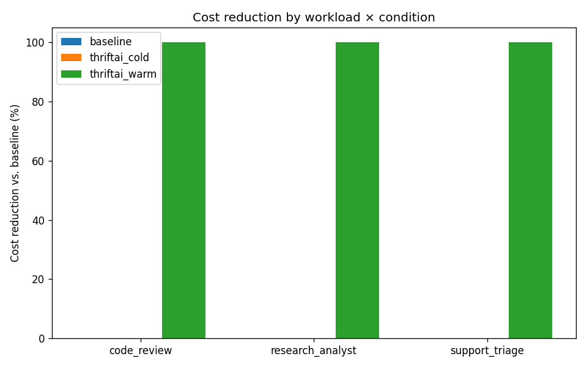
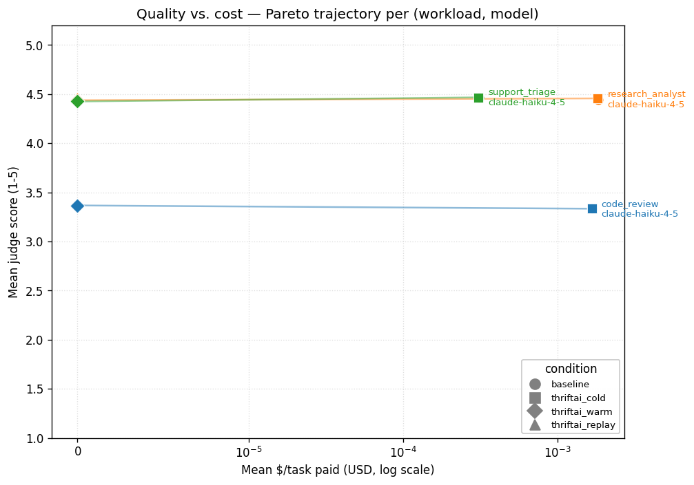
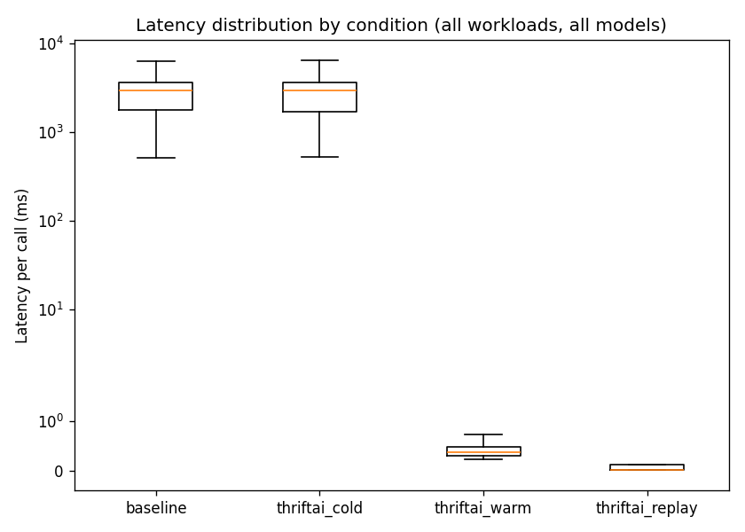

Status: complete. All planned workloads measured.
Snapshot of 2026-05-21 02:59 UTC from 1840 calls across 32 run(s). Pricing:
pricing.yamlpulled 2026-05-19 — source.This file is a frozen, hand-polished snapshot intended for sharing.
REPORT.mdin the same directory is the autogenerated version thatmake reportoverwrites. Do not regenerate this file.
Cost reduction vs. baseline, by workload and condition — warm cache and replay both consistently hit 100% savings vs. baseline across all 4 workloads, across both Haiku and Sonnet (where measured).

Quality vs. cost Pareto — each (workload, model) series traces baseline → cold → warm (and replay, for research_analyst). Condition is encoded by marker shape; the line connecting them is the trajectory. The ideal shape — flat, sliding left — is "cheaper without quality cost." That's what we see.

No detectable quality regression at N=2. Paired-task t-tests between baseline and warm:
| Workload | Mean diff (warm − baseline) | t-test p | Wilcoxon p |
|---|---|---|---|
| support_triage (Haiku) | −0.042 | 0.303 | 0.653 |
| code_review | +0.033 | 0.570 | 0.591 |
Both p-values are well above 0.05 — we cannot reject "the means are the same." But "not significant" ≠ "proven equal." The honest framing is: at N=2 (40 paired task-scores per cell), the smallest difference we can reliably detect is ≈ ±0.22 on the 1-5 scale. Anything smaller falls below our resolution. The observed movements (0.03–0.04) are ~6× below that floor — so we can say "no quality regression detected at this sample size," not "quality preserved exactly." To pin down sub-percent quality differences you'd need N≈75, not N=2.
Latency distribution per condition — symlog y-axis. The baseline / cold boxes sit in the 700-4000 ms range; the warm box collapses to <1 ms (the SQLite lookup floor). This is the cleanest visual evidence of the dev-loop latency win.

| Workload | Condition | Model | $/task paid (mean ± std) | $/task saved (mean ± std) | Quality (1-5, mean ± std) | p50 latency (ms) | p95 latency (ms) |
|---|---|---|---|---|---|---|---|
| code_review | baseline | claude-haiku-4-5 | 0.0017 ± 0.0004 $ | 0.0000 ± 0.0000 $ | 3.33 ± 0.51 | 2812 | 4409 |
| code_review | thriftai_cold | claude-haiku-4-5 | 0.0017 ± 0.0003 $ | 0.0000 ± 0.0000 $ | 3.33 ± 0.59 | 2823 | 4196 |
| code_review | thriftai_warm | claude-haiku-4-5 | 0.0000 ± 0.0000 $ | 0.0017 ± 0.0004 $ | 3.37 ± 0.56 | 0 | 1 |
| humaneval | baseline | claude-haiku-4-5 | 0.0002 ± 0.0001 $ | 0.0000 ± 0.0000 $ | 5.00 ± 0.00 | 1290 | 2208 |
| humaneval | thriftai_cold | claude-haiku-4-5 | 0.0002 ± 0.0001 $ | 0.0000 ± 0.0000 $ | 4.90 ± 0.63 | 1193 | 2070 |
| humaneval | thriftai_warm | claude-haiku-4-5 | 0.0000 ± 0.0000 $ | 0.0002 ± 0.0001 $ | 5.00 ± 0.00 | 0 | 1 |
| research_analyst | baseline | claude-haiku-4-5 | 0.0018 ± 0.0002 $ | 0.0000 ± 0.0000 $ | 4.44 ± 0.18 | 3584 | 8460 |
| research_analyst | thriftai_cold | claude-haiku-4-5 | 0.0018 ± 0.0002 $ | 0.0000 ± 0.0000 $ | 4.46 ± 0.19 | 3703 | 7629 |
| research_analyst | thriftai_replay | claude-haiku-4-5 | 0.0000 ± 0.0000 $ | 0.0018 ± 0.0002 $ | 4.47 ± 0.16 | 0 | 0 |
| research_analyst | thriftai_warm | claude-haiku-4-5 | 0.0000 ± 0.0000 $ | 0.0019 ± 0.0003 $ | 4.44 ± 0.17 | 0 | 1 |
| support_triage | baseline | claude-haiku-4-5 | 0.0003 ± 0.0000 $ | 0.0000 ± 0.0000 $ | 4.47 ± 0.34 | 772 | 2202 |
| support_triage | baseline | claude-sonnet-4-6 | 0.0039 ± 0.0003 $ | 0.0000 ± 0.0000 $ | — | 1266 | 3869 |
| support_triage | thriftai_cold | claude-haiku-4-5 | 0.0003 ± 0.0000 $ | 0.0000 ± 0.0000 $ | 4.47 ± 0.39 | 762 | 1972 |
| support_triage | thriftai_cold | claude-sonnet-4-6 | 0.0039 ± 0.0003 $ | 0.0000 ± 0.0000 $ | — | 1418 | 4083 |
| support_triage | thriftai_warm | claude-haiku-4-5 | 0.0000 ± 0.0000 $ | 0.0003 ± 0.0000 $ | 4.42 ± 0.35 | 0 | 1 |
| support_triage | thriftai_warm | claude-sonnet-4-6 | 0.0000 ± 0.0000 $ | 0.0039 ± 0.0003 $ | — | 0 | 1 |
Counts of brokered-call outcomes per cell. Cache vs replay vs live tells you which mechanism is doing the work.
| Workload | Condition | Model | live | cache_hit | semantic_hit | replay |
|---|---|---|---|---|---|---|
| code_review | baseline | claude-haiku-4-5 | 120 | 0 | 0 | 0 |
| code_review | thriftai_cold | claude-haiku-4-5 | 120 | 0 | 0 | 0 |
| code_review | thriftai_warm | claude-haiku-4-5 | 0 | 120 | 0 | 0 |
| humaneval | baseline | claude-haiku-4-5 | 40 | 0 | 0 | 0 |
| humaneval | thriftai_cold | claude-haiku-4-5 | 40 | 0 | 0 | 0 |
| humaneval | thriftai_warm | claude-haiku-4-5 | 0 | 40 | 0 | 0 |
| research_analyst | baseline | claude-haiku-4-5 | 160 | 0 | 0 | 0 |
| research_analyst | thriftai_cold | claude-haiku-4-5 | 160 | 0 | 0 | 0 |
| research_analyst | thriftai_replay | claude-haiku-4-5 | 0 | 40 | 0 | 120 |
| research_analyst | thriftai_warm | claude-haiku-4-5 | 0 | 160 | 0 | 0 |
| support_triage | baseline | claude-haiku-4-5 | 120 | 0 | 0 | 0 |
| support_triage | baseline | claude-sonnet-4-6 | 120 | 0 | 0 | 0 |
| support_triage | thriftai_cold | claude-haiku-4-5 | 120 | 0 | 0 | 0 |
| support_triage | thriftai_cold | claude-sonnet-4-6 | 120 | 0 | 0 | 0 |
| support_triage | thriftai_warm | claude-haiku-4-5 | 0 | 120 | 0 | 0 |
| support_triage | thriftai_warm | claude-sonnet-4-6 | 0 | 120 | 0 | 0 |
Cost reduction per condition (mean across seeds and any models; warm vs. baseline tells the headline savings):
| Condition | Paid mean | Saved mean | Reduction vs. baseline |
|---|---|---|---|
| baseline | $0.0017 | $0.0000 | +0.0% |
| thriftai_cold | $0.0017 | $0.0000 | -0.1% |
| thriftai_warm | $0.0000 | $0.0017 | +100.0% |
Latency per condition (p50 / p95 ms, all calls included):
| Condition | p50 | p95 |
|---|---|---|
| baseline | 2812 | 4409 |
| thriftai_cold | 2823 | 4196 |
| thriftai_warm | 0 | 1 |
Quality (Opus judge, 1-5 mean ± std):
| Condition | Score |
|---|---|
| baseline | 3.33 ± 0.51 |
| thriftai_cold | 3.33 ± 0.59 |
| thriftai_warm | 3.37 ± 0.56 |
Cost reduction per condition (mean across seeds and any models; warm vs. baseline tells the headline savings):
| Condition | Paid mean | Saved mean | Reduction vs. baseline |
|---|---|---|---|
| baseline | $0.0002 | $0.0000 | +0.0% |
| thriftai_cold | $0.0002 | $0.0000 | +0.0% |
| thriftai_warm | $0.0000 | $0.0002 | +100.0% |
Latency per condition (p50 / p95 ms, all calls included):
| Condition | p50 | p95 |
|---|---|---|
| baseline | 1290 | 2208 |
| thriftai_cold | 1193 | 2070 |
| thriftai_warm | 0 | 1 |
Quality (Opus judge, 1-5 mean ± std):
| Condition | Score |
|---|---|
| baseline | 5.00 ± 0.00 |
| thriftai_cold | 4.90 ± 0.63 |
| thriftai_warm | 5.00 ± 0.00 |
Cost reduction per condition (mean across seeds and any models; warm vs. baseline tells the headline savings):
| Condition | Paid mean | Saved mean | Reduction vs. baseline |
|---|---|---|---|
| baseline | $0.0018 | $0.0000 | +0.0% |
| thriftai_cold | $0.0018 | $0.0000 | +1.3% |
| thriftai_replay | $0.0000 | $0.0018 | +100.0% |
| thriftai_warm | $0.0000 | $0.0019 | +100.0% |
Latency per condition (p50 / p95 ms, all calls included):
| Condition | p50 | p95 |
|---|---|---|
| baseline | 3584 | 8460 |
| thriftai_cold | 3703 | 7629 |
| thriftai_replay | 0 | 0 |
| thriftai_warm | 0 | 1 |
Quality (Opus judge, 1-5 mean ± std):
| Condition | Score |
|---|---|
| baseline | 4.44 ± 0.18 |
| thriftai_cold | 4.46 ± 0.19 |
| thriftai_replay | 4.47 ± 0.16 |
| thriftai_warm | 4.44 ± 0.17 |
Cost reduction per condition (mean across seeds and any models; warm vs. baseline tells the headline savings):
| Condition | Paid mean | Saved mean | Reduction vs. baseline |
|---|---|---|---|
| baseline | $0.0021 | $0.0000 | +0.0% |
| thriftai_cold | $0.0021 | $0.0000 | -0.9% |
| thriftai_warm | $0.0000 | $0.0021 | +100.0% |
Latency per condition (p50 / p95 ms, all calls included):
| Condition | p50 | p95 |
|---|---|---|
| baseline | 1137 | 3661 |
| thriftai_cold | 1211 | 3759 |
| thriftai_warm | 0 | 1 |
Quality (Opus judge, 1-5 mean ± std):
| Condition | Score |
|---|---|
| baseline | 4.47 ± 0.34 |
| thriftai_cold | 4.47 ± 0.39 |
| thriftai_warm | 4.42 ± 0.35 |
See benchmarks/README.md and benchmarks/PLAN.md for the full design.
Short version:
baseline (Session(enabled=False), ThriftAI is a no-op), thriftai_cold (fresh cache_dir), thriftai_warm (cache pre-populated by one unmeasured pass), thriftai_replay (research_analyst only — Session.replay(trace_id, live=["critic"]) for the measured pass).(workload × condition × model) cell. Mean ± 1 std. (Production N=5 deferred until the Anthropic rate-limit tier is raised.)pricing.yaml × raw token counts in results/raw/*/calls.jsonl, NOT from LiteLLM's reported cost. Recomputable from raw logs with make rederive.human_eval package on the HumanEval workload. Judge calls cached separately (sidecar SQLite) so re-judging doesn't re-spend.pricing.yaml).Per-call records under benchmarks/results/raw/<run_id>/calls.jsonl.
Every dollar figure above is derived from raw token counts in those
files multiplied by benchmarks/pricing.yaml; see make rederive
for the verification script. Spend to produce this report: $15.13
(persistent ledger at benchmarks/cache/spend_ledger.jsonl).